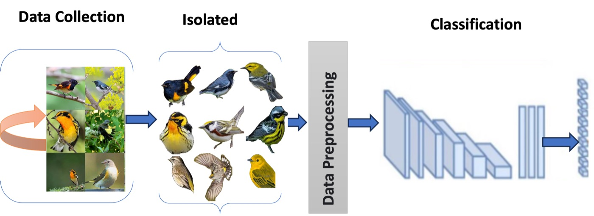

AI for network security
Lightweight, noise-tolerant, data-efficient, and LLM-enhanced models for flow-level DDoS detection across edge, IoT, and resource-constrained networks.
ReadPh.D. Candidate · AI Researcher · 2026–27 Job Market
I am a Computer Science Ph.D. Candidate at Fordham University developing robust and efficient machine-learning systems for network security, computer vision, and multimodal intelligence. My first-author work spans lightweight and noise-tolerant DDoS detection, LLM-enhanced network analysis, foreground-centric recognition, and vision–language generation.
I connect rigorous experiments with reproducible software—from data-efficient network-defense models to end-to-end visual-recognition pipelines. I am seeking postdoctoral and faculty research positions, as well as Research Scientist, Applied Scientist, and Machine Learning Engineer roles.
Open to academic and industry research roles · Available Fall 2027
Research
Lightweight, noise-tolerant, data-efficient, and LLM-enhanced models for flow-level DDoS detection across edge, IoT, and resource-constrained networks.
ReadLearning strategies for noisy, imbalanced, or limited data using augmentation, meta-learning, compact architectures, and multi-model decision fusion.
ReadForeground-centric fine-grained recognition and vision–language generation that reduce background bias, capture subtle visual differences, and produce context-aware descriptions.
ReadFeatured system · Open source

warbler_yolo turns unannotated field images into a reproducible fine-grained recognition workflow. It segments and crops foreground subjects, creates standardized data splits, then trains and evaluates a YOLO11 classifier through a reusable command-line pipeline.
Project stack
Broader technical toolkit
Academic research
Academic record
Contact
I welcome focused conversations about academic opportunities, research collaboration, and applied AI roles.
aalfatemi@fordham.edu